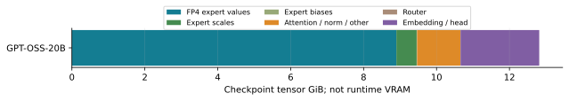
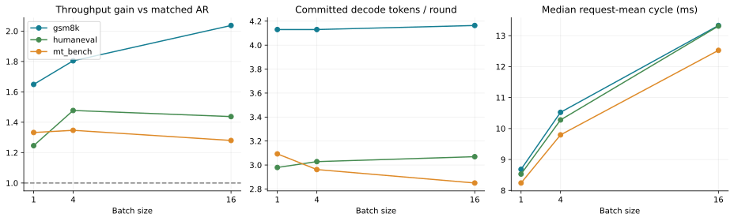
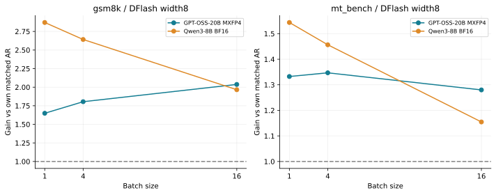
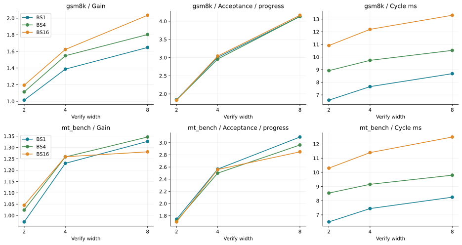
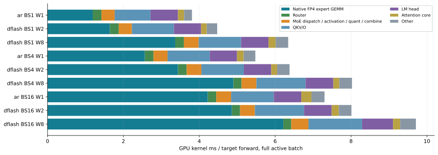
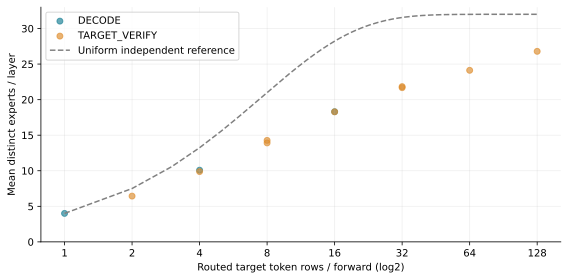

报告索引MoE Parallel SD：GPT-OSS-20B MXFP4
2026-11-06（北京时间）· X6 单 RTX 5090 · TP1 · SGLang offline Engine。
已成功汇总 75 个无 profiler benchmark cell。状态：native03.admission: success。未完成的实验不视为结论。
报告按实验开始日归档。GPU 主队列开始：2026-11-06 23:00:18 +0800；已结束阶段最近完成：2026-11-07 00:03:12 +0800；本页更新：2026-11-07 01:04:54 +0800。模板日期仍固定为2026-11-06。
本次采用 z-lab/gpt-oss-20b-DFlash 的普通 DFlash checkpoint，未启用需要 selector 权重的 DFlash2。补充核查了公开 DFlash2、Domino、DSpark 模型名列表，未找到匹配 GPT-OSS-20B 的可直接运行 checkpoint；检索范围及其局限保存在支持核查记录中。DFlare 有匹配权重，但当前固定版本没有其 QwenDFlareDraftModel 实现。
已汇总 9 个预热 trace，其中 9 个包含已执行的原生 SM120 block-scaled FP4 Tensor Core GEMM。依据是完整kernel类型中明确的 MainloopSm120、SM120::BLOCKSCALED、E2M1/E4M3操作数和E8M0 scale；setup/quantization kernel不会单独作为加速证据。
沿用先前离线协议：每组使用同样的16条原始任务输入。GPT-OSS 使用自身 Harmony 模板重新 tokenize，medium reasoning；模板日期固定为2026-11-06，输入 IDs 提前保存，避免 GPU 等待跨日改变输入。Qwen3-8B dense 对照沿用前次的 non-thinking 模板，因此跨模型也改变了输出模式。固定输出128 tokens、忽略 EOS、重复3次。加载、编译、warmup 和 cache flush 不计时；每任务/BS组前后各跑 AR。Decode CUDA Graph 与 overlap 开启，prefill graph 和 radix/prefix reuse 关闭。
仅采用配对且被当前实现支持的 checkpoint。GPT-OSS-20B 的 DFlash 已准备；记录的搜索未找到匹配 Domino/DSpark，DFlare 权重使用另一种架构，当前固定 SGLang 没有相应模型实现。不能把 checkpoint 换名后当作已支持的方法。
GPT-OSS 的 sliding/full softmax attention 不包含 GDN recurrent state。MoE/dense 跨模型比较同时改变了架构、精度、激活参数量、tokenizer 和 draft，不能把 gain 差值全部归因于 MoE。重点使用同模型的 BS/width 对照、实际专家路由与 kernel 成本解释。
权重 tensor 存储中，FP4 专家值约8.90 GiB、E8M0 scales约0.56 GiB，其余约3.36 GiB主要为BF16部分。单步 AR 只访问被路由到的专家，因此不能用总权重大小除以显存带宽直接估算 decode 时间；实际 footprint 和重用仍需路由与 profiler 证据。
当前测得的主要结论
同一套 GPT-OSS-20B MXFP4 target 与 DFlash width8，在不同任务上的加速比并不相同。下面全部使用前后两个 AR 的中位吞吐作为基线；尚缺配对基线的点不填数。
τ 是去掉 prefill 首 token 后，每个请求 verify 的平均提交 token 数；包括每轮额外提交的 target token，不等于纯 draft 接受数。固定长度离线 wave 的吞吐还受 prefill、请求完成尾部和 API 开销影响，不能把全局 τ 乘以“请求平均周期的中位数”当作精确的吞吐公式。
成本增长主要在哪里
这里只取活跃请求数等于标称 BS 的 target forward，时间是各 GPU kernel 的累计执行时间。BS1→16，AR target 成本增加 1.92×，width8 verify 增加 1.53×；verify/AR 的成本比由 1.67 降到 1.33。因此，即使 τ 接近不变，gain 也可能随 BS 上升。AR 自己随 BS 增加的专家访问成本同样重要。该表不是端到端 SD 周期：尚未加入 draft、轮次间空隙和请求尾部。
进一步看增长量，原生 FP4 专家 GEMM 占 AR target 增量的 86.8%、占 width8 verify 增量的 84.7%。本组从 BS1 增大到 BS16 的 target 成本增长主要发生在专家 GEMM 中，router 本身不是主要增量来源。
MXFP4 仅用于专家权重，专家 GEMM 实际使用 MXFP8 激活 × MXFP4 权重；QKV/O、router、LM head 等仍有 BF16 运算。小 BS 时约固定的 head 和投影成本占比较高；增大 BS/width 后专家 GEMM 的增长更显著。低比特专家与未量化 dense 部分的组合也会改变瓶颈，不能将整个模型当作统一的 FP4 GEMM。
阶段表包含实际运行中的请求完成尾部，因而 BS16 verify 与前表“完整活跃 batch”的值略有不同。CPU NVTX 是包围异步提交、等待或控制逻辑的 wall time；其中可能与 GPU 执行重叠。不能把 CPU 和 GPU 两列相加，也不能把整个 control NVTX 都称为 CPU 计算。当前主要增长体现在 target GPU 工作，draft 与 control 的增长小得多。
另一个影响 gain 的因素是 draft 的相对成本：本次 draft 的 GPU 工作在 BS1 约相当于一个 AR target forward 的 55%，到 BS16 降为 33%。稀疏、低比特 target 让 AR 本身更快，dense draft 即使绝对耗时不大，也可能成为明显的额外负担。这些是 GPU 工作量的比例，不能当作互不重叠的端到端周期份额。
实际专家覆盖与 MoE 的重用
实际覆盖数给出了更直接的解释：W8 verify 相对 AR 的专家集合大小，在 BS1 是 3.48 倍，到 BS16 降为 1.46 倍。AR 随 BS 增大也逐渐访问更多专家，因此 verify 的增量工作集并不按8倍增长。这是测得的专家集合比例，仍不是 HBM 字节比例；每个专家的 token 负载、tile padding、缓存与权重重读还会影响时间。
BS16×W8 的全局128个 verify token rows，被分流后，每个命中专家平均只有 19.4 个 token；每层最繁忙专家平均为 76.5 个。Dense FFN 则由同一组权重处理全部128个 token。MoE 的全局大 M 不代表所有专家 GEMM 都有同样大的 M；这也是不能直接套用“prefill 大矩阵已 compute bound”判断的原因。
MoE 的有用矩阵行数更接近每个专家收到的 token 数 nₑ，而非统一的 B×W。增加 B 或 W 一方面增加已有专家内的重用，另一方面可能让更多专家的权重进入本轮工作集；后者会增加权重流量。专家覆盖逐渐接近上限后，增加 W 的额外专家集合可能小于小 BS 时的增量，所以 verify 相对 AR 的成本可以缩小。实际路由具有相关性，上表来自独立记录，均匀独立路由曲线仅用于参照。专家 checkpoint 字节的集合是逻辑 footprint，不能冒充实测 HBM 传输量或严格的 roofline 结论。
作为 roofline 近似，单个专家矩阵 Wₑ∈RK×N 接收 nₑ 个 token 时，FLOPs≈2nₑKN。只计一次权重读取的理想化强度约为 AIₑ≈2nₑ/sw FLOP/byte；实际还要计激活、scale、dispatch/combine、缓存和权重重读。对 MXFP4，专家权重与 scale 的平均 sw≈0.53125 byte/值。这个式子解释了为什么应看专家 token 负载，而不能仅凭全局 B×W 判断是否 compute bound；原生低精度算力峰值也随精度变化。
活动率能说明什么
以上为 nsys 1 kHz 采样按相关 kernel 区间加权后的活动率，含不同类型算子的混合，不等于各 kernel 的实测 FLOP/s。SM active 表示有工作，不代表 tensor 吞吐已经饱和；Tensor active、DRAM read 可作为方向性证据，但无法单独证明整个 verify 已 compute bound。要严格定位 roofline，还需每个主要 kernel 的运算量、实际内存字节和对应精度下的可达峰值。
与 dense target 的同宽度对照
两边都固定 DFlash width8，并使用本次重跑的 SGLang FA4 离线协议。跨模型还改变了 tokenizer、prompt 模板、draft、权重精度及激活参数量；这组对照展示现象，不是只替换 MoE 这一变量的因果实验。MoE 机制的判断应结合本模型的 BS/width 扫描、路由与 kernel 分解。
解释 BS 趋势：同时看 AR 与整个 SD 周期
MoE 的整个 SD 周期涨幅其实高于 dense 对照，但其 AR 涨得更快，因此 gain 仍可上升。这里是请求平均 decode 周期的中位数，AR 再取前后基线的中位数；SD 含 draft、verify 与控制等待，和上面的 GPU kernel 工作量表口径不同。全局 τ 与这些中位数不能精确还原含 prefill 和完成尾部的 wave 吞吐。不能仅凭 gain 就推断 MoE verify GEMM 比 dense verify GEMM 增长更慢。
为什么平均接受长度不能完全预测吞吐
各列分别取三次重复的中位数。一个 wave 要等最后一个请求完成；该请求的 token/step 可能低于全局 τ，不同方法的最后完成请求也可能不同。这能区分接受长度变化、target 周期增长与完成尾部，不能把全部 gain 变化都归因于 GPU 算力。
输出一致性与适用边界
这些结果保留了 AR/SD token 分歧，不能宣称端到端逐 token 等价。固定输出128 tokens 的实验测速度，不测最终答案正确率；浮点形状、量化执行路径及输出轨迹差异都需要独立核查，不能只凭出现分歧就确定原因。
同配置 AR 前后基线、跨 BS、跨 width，以及重复的 width8 cohort 都另有逐条首次分歧记录。这里的“完全相同”比较完整128-token 序列；跨模型的 token IDs 不作等价比较。
另外对 headline 已出现分歧的两条 GSM8K 输入单独采集 top5 logprobs，分别使用 BF16/FP32 LM head；这些 cell 不参与性能排名。诊断范围仅限这两条输入，FP32 head 不会把量化/BF16 backbone 变成全 FP32。
只在首次分歧位置比较 logits/logprobs，此时两边的历史前缀相同；分歧后不能把不同前缀下的 logits 当作同一个条件分布来比较。还需查看 BF16 logprob 路径是否复现了 headline 输出，避免把诊断自身改变路径的结果混入解释。
验证宽度的取舍
更宽会提高潜在提交长度，也会增加 target 专家工作、draft 成本和未接受 token 的浪费。width 扫描使用同一 checkpoint，不代表针对不同宽度重新训练；最快值仅对本次候选宽度和输入成立，且须同时参考接受长度和输出轨迹。
各 SD 配置的测量表与图
下表汇总 SD 配置；含前后 AR 基线的全部75个 cell 见 benchmarks.csv。

来自实际 safetensors tensor 元数据的存储分解；不是运行峰值显存或 HBM 传输量。
GPT-OSS-20B MXFP4、DFlash width8；吞吐与请求周期来自无 profiler 的独立进程。
本次重跑的同宽度对照；跨模型还改变了精度、draft 和 tokenizer 等因素，不能将差异全部归因于 MoE。
同一个 DFlash checkpoint，仅缩短验证宽度；保留跨宽度的 token 分歧。
仅选择实际活跃 BS 等于标称值的 target forward。每轮核对49个 BF16投影/head、48个原生FP4专家GEMM、24个router线性算子及24个路由选择；时间为GPU kernel之和。
独立的路由记录诊断，仅取完整活跃 batch，不用于性能计时；同样 token rows 可有不同的请求内/请求间相关性，虚线仅为均匀独立路由参照。路由记录和 nsys 是独立诊断，不进入 headline 排名。Kernel 时间之和是 GPU 工作量，不是端到端关键路径；CPU/GPU 时间不能直接相加。Distinct expert bytes 是依据 checkpoint 得出的访问集合代理，不是实测 HBM 传输字节。Tensor/SM 活跃率不能单独证明 compute bound。
保留 AR/SD、跨 BS/width 和配置内重复的输出 IDs 与首次分歧；固定长度吞吐不等同任务质量。代表性原始 nsys-rep 留在忽略的 profiles/moe_sd_20261106/。
表中物理显存峰值覆盖加载、编译、warmup 和测试整个进程生命周期，含 allocator 保留、临时重排及 CUDA Graph 等开销。它不是稳态推理显存；AR 与 SD 的两个生命周期峰值不能直接相减，作为 draft 权重、hidden-state 或 KV cache 的额外大小。
本机下载5份代表性 nsys-rep 与分析（ZIP，14.7 MiB） · 原始 trace / ZIP SHA256 清单。profiles/ 中的原始 profiler 文件保留在实验机器，不随 Git 提交。需 Nsight Systems 2026.5.1 或兼容更新版本；单独选择 AR/DF 的 BS1/16 和 BS16 width2，用于比较 target 成本及验证宽度。
建议先对比 AR BS1/16，再对比 DFlash W8 BS1/16，最后看 BS16 W2 与 W8。展开 CUDA Graph 的 node 以查看真实 kernel；target 的 CPU NVTX 为 step[DECODE …] 或 step[VERIFY …]，可搜索 MainloopSm120 定位原生 FP4 专家 GEMM。与 DRAFT、decode_control 对照时，按 CPU launch correlation 归属 GPU 工作，不要仅按 CPU NVTX 的横向时间边界截取；二者异步，可能重叠。
benchmarks.csv · source_manifest.json · correctness.json · cross_configuration_parity.json · checkpoint_memory.json · target_components.csv · target_components_evidence.json · routing_summary.csv · routing_layers.csv · routing_evidence.json · trace_phases.csv · trace_by_active_bs.csv · trace_kernels.csv · trace_counters.csv · trace_evidence.json · wave_tails.csv · wave_tails_evidence.json · numerics.json · findings.json
实验协议 · Checkpoint 支持核查 · 权重 revision / tensor 元数据